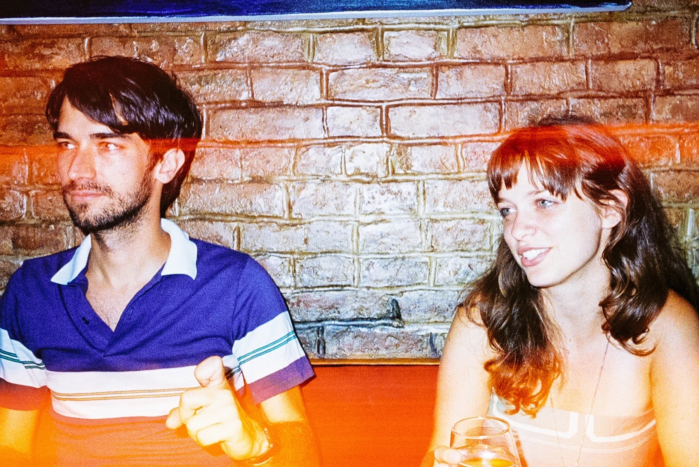

West “By God” Virginia is a special place – it’s amazing that so many of you are making the trip! Below are some helpful travel tips to keep in mind while making your plans. We’ve put together a list of cool pit stops if you’re planning to drive down from up north. We’ve also reserved some lakeside cottages, a block of rooms at the lodge, plus a few campsites at the Stonewall Resort. Read through the information below to learn the deets!
Getting to West Virginia
West Virginia is pretty easy to get to by air or car (though not so much by train). Here’s the rundown:
By Car
If you’re driving to the wedding, just type this address into Google Maps: Stonewall Resort, 5940 Resort Drive, Roanoke, WV 26447. If you get lost, you can always call the resort and ask them for specific directions (their number is 888-278-8150). If you’re driving from New York the ride is about 7.5 hours. We’ve put together a list of cool places to stop on your drive (though the more you stop at the longer your trip will be). If you are planning to drive or if you need a ride, be sure to let us know so that we can help set up a carpool!
Here’s a link to Mary Conrad Park on Google Maps. Here’s a link to directions from the resort to the park. It’s pretty easy to get to. All you have to do is exit the resort, take a left, drive 1.9 miles, and then turn right into Mary Conrad Park! It’s just past the gun range…
By Plane
Flying to the wedding is also a good option. There are 3 different airports for you to choose from. First, you could fly directly to Northcentral West Virginia Airport in Clarksburg, WV (it’s about a 20 minute drive to the wedding). You can catch a flight from New York to Clarksburg – it takes about 4 hours (with a quick stop in DC) and costs around $300 roundtrip. This is the easiest option.
You could also fly to either Pittsburgh, PA or Charleston, WV. Both are cheaper to fly to, but are about a 2 hour drive to the wedding.
Lodging
There are a few different places you can stay, but Stonewall Resort is your best bet…
Stonewall Resort
We recommend that everyone stay together over at the Stonewall Resort, which is right across the street from Mary Conrad Park, where the wedding will take place. The resort is on Stonewall Jackson Lake, and there’re a lot of fun things to do there. We’ve reserved a bunch of lakeside cottages, a big block of rooms at the Lodge, plus a few campsites for those willing to brave the elements.
Just call the resort’s reservations department at 304-269-7400 to make your reservations (they’re available Monday through Friday from 8:30AM to 6:30PM, plus Saturday and Sunday from 8:30AM to 5:00PM). To get the contracted room rates, make sure you say you’re with the “Leveton/Hall Wedding Room Block”.
That said, if you want to stay at the Hall family farm house or camp out in the surrounding woods like a regular Daniel Boone, just let us know!